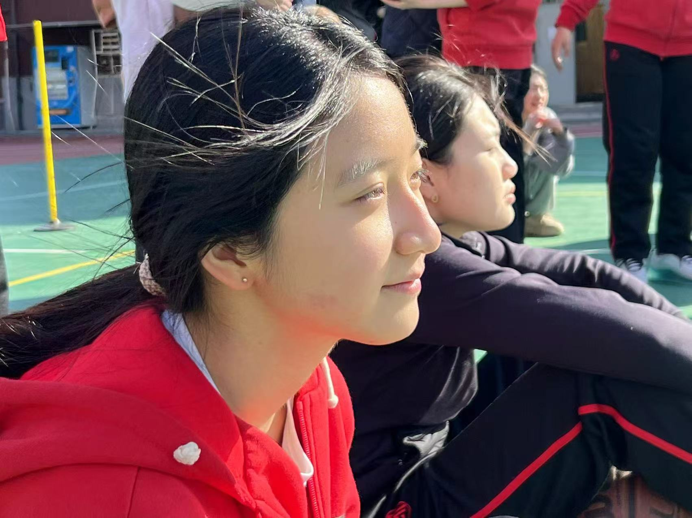
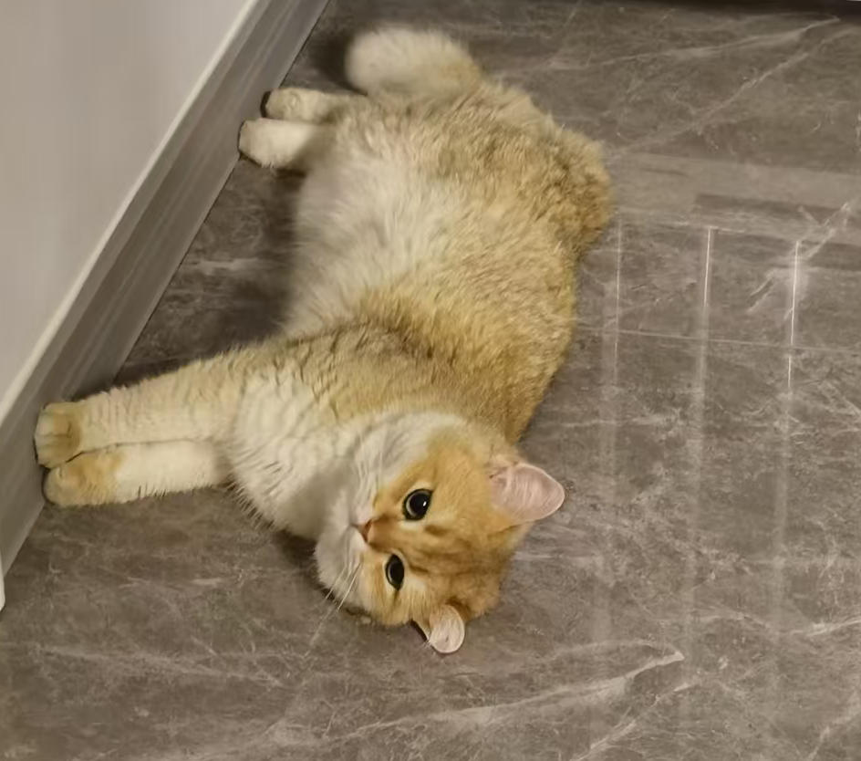

About
Vivian Lin is a documentary filmmaker & video-journalists. She is a senior at Williams College majoring in Comparative Literature. She is also a member at Purple Valley production.
Her award-winning documentary short xxx screened at festivals including DOC NYC, Rooftop Films, Palm Springs, Aspen Shortsfest, and was selected for Vimeo Staff Picks. Vivian was an Associate Producer on the feature documentary xxx, which premiered at #1 on NETFLIX in 2024.
Replace this with artist statement, academic background, exhibitions, publications, or anything else.

While not working, she likes to watch movies at the movie-theater and hang out with her cat.
